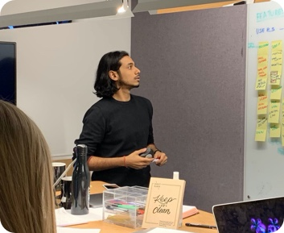

I first came across the term User Experience in 2011 while doing a design project for ABB at the Aalto Design Factory. Since, then I've learned, practised, taught, eliminated and reused many ways to approach building an experience.
After tweaking, failing, experimenting and going through many learnings I settled in these following principles that I use to approach any design work.
User-Centered // Data-Driven // Agile // Inclusive // Empathy // Organic
While no two design challenges are same, there is an underlying structure (design process) I follow to keep me focused, resilient, creative and humble. It’s based on JTBD (Job To Be Done), lean and agile methodologies, asking questions and investigating suitable context.
It continues to evolve based on my own academic and professional experience + working and learning from UX thoughtleaders such as Prof. Yuvvone Rogers, Kia, Don, Jacob,;
Although the nature of the design process is presented in a sequential manner, it is iterative and there is a level of flexibility to align the process based on the suitability of the project.
While it is not a strict rule nor every project is not big enough to encompass the over-arching UX design process but I do follow it closely.

GATHER
Understanding the context (intend)
I begin by gaining insights of the business vision and goal/objectives of the brand followed by the lean model canvas.
The canvas lays down the problem, customer segment (user), solution, value proposition, channels, revenue model and key resources. This helps with aligning the team and managing stakeholder's expectations.
Understanding and defining the intial success metrics ensures all stakeholders are aligned with key aims before moving into the design stage.
Understand the competitor landscape
I use a petal diagram or a 2X2 Matrix to indentify the direct and indirect competitions. This insight gives me a sense of where the brand is differentiating itself in the market and other customer segments that are not necessarily mentioned previously.
Any previous research
I try to find out if there is any previous (formative/summative) research work is carried out conducted (market/user research, competitor analyses, etc.). If there is already an existing product I ask for any analytics data. Past analytics?
Practicalities and limitations
Finally before moving to the research phase, it is important that I am made aware of any deadlines, launch, communication with the internal and external stakeholders, organisational structure, Engagement with the team etc.
EXPLORE - RESEARCH
Gaining domain knowledge
I learn about the core domain so that it could equip me with the domain language to interact with the stakeholders and users
Interacting with the users
Initial research will help to test the assumptions. Interacting with users gives me insights on their day to day life, their needs and pain points. I do this by running qualitative studies such as interviews, ethnographic studies, observations, survey, guerilla testing
Expert evaluation
Incase a proof of concept/MVP is already being built, I run cognitive walkthrough or heuristic evaluation to learn about the design
ANALYSE
Empathy// Being the user
The interactions with the user provides a good idea of matching the customer segment hypothesis into persona. This also provides awareness of the user providing empathy to the stakeholder.
Mapping the data
Creating user journey, process maps and service blueprint provides a complete picture of the various touchpoints
Key findings
HYPOTHESIS TO BE TESTED: Is this the right problem they are solving for the right audience Analysing the research notes, evaluation of proof of concept, go through the analytics to find trends and patterns and understand the problem.
Reframing intention
We know the pain points the user have. We know the competitors that exist. Our next step is to ideate and innovate. We do this by Clarify the purpose and intent that will guide design. defining a clear idea of our intent based on the key findings we’ll quickly move into creative thinking and design exploration.
IDEATE, PROTOTYPE & ITERATE
Generating ideas
By the process of diverging and converging we explore, develop and iterate creative ways of solving the problem, regardless of feasibility. We do this by design workshops, brainstorming sessions, google sprint. Resolve conflicting design ideas amongst project stakeholders.
Prototyping and iteration
Design and prepare prototype(s) that can be tested with people. Early sketches and design ideas allow us to get feedback and direction. Create a plan to make it happen. Test hypothesis early and often Gather feedback on multiple designs with representative users
Wireframe - Overall direction and description
Creating a plan to design engaging, authentic experiences. Prioritise activities based on business goals
Information architecture
Outline a clear direction for all research and design activities going forward. Information architecture, site map
TRANSFORM & TEST
Design the experience (Agile)
Based on evidence based research we prioritise design features and plan to implement it into agile sprints.
Design the experience (Agile)
Based on evidence based research we prioritise design features and plan to implement it into agile sprints.
Participant based evaluation
Turn ideas into reality TEST Conduct 1:1 user testing with 5-6 people from the product's primary target audience. Design and front-end sprints will have user testing built in, so we check our work and thinking as we progress.
MEASURE & MATURE
Analytics data and Customer feedback Once the design is live, continuous feedback is recorded and measured by statistical analysis of analytics data as well as involving the customer support team for qualitative data.
Improving on design Using techniques such as A/B testing, Multivariate testing will helps us to keep maturing the design.
Research
Research is a significant part of designing any kind of services and product. At various stage of the design cycle, I use different techniques. With any good research it is important to lay out the hypothesis, set research questions, understand the participants, recruit the right participants, have a suitable sample size, use the appropriate data collection techniques as well as data analysis.
Summative Research // Evaluation